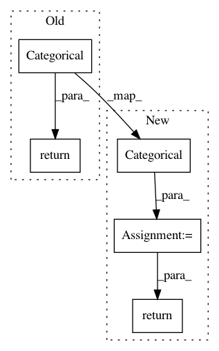

8f27fae607562177d6b840a0c0db2c67a95a88d8,gpytorch/likelihoods/softmax_likelihood.py,SoftmaxLikelihood,forward,#SoftmaxLikelihood#Any#,24
Before Change
mixed_fs = self.mixing_weights.matmul(function_samples) // num_classes x num_data
mixed_fs = mixed_fs.transpose(-1, -2) // num_data x num_classes
softmax = torch.nn.functional.softmax(mixed_fs, -1)
return base_distributions.Categorical(probs=softmax)
After Change
mixed_fs = self.mixing_weights @ function_samples // num_classes x num_data
mixed_fs = mixed_fs.transpose(-1, -2) // num_data x num_classes
res = base_distributions.Categorical(logits=mixed_fs)
return res
In pattern: SUPERPATTERN
Frequency: 3
Non-data size: 5
Instances
Project Name: cornellius-gp/gpytorch
Commit Name: 8f27fae607562177d6b840a0c0db2c67a95a88d8
Time: 2019-04-12
Author: gpleiss@gmail.com
File Name: gpytorch/likelihoods/softmax_likelihood.py
Class Name: SoftmaxLikelihood
Method Name: forward
Project Name: tensorflow/agents
Commit Name: a614c5b699ab08f6ac501c1d2bfc520d0a46572f
Time: 2019-08-27
Author: wun@google.com
File Name: tf_agents/policies/categorical_q_policy.py
Class Name: CategoricalQPolicy
Method Name: _distribution
Project Name: cornellius-gp/gpytorch
Commit Name: 79725f0aeb9a9f93617e291345c0b81add027373
Time: 2019-04-11
Author: gpleiss@gmail.com
File Name: gpytorch/likelihoods/softmax_likelihood.py
Class Name: SoftmaxLikelihood
Method Name: forward